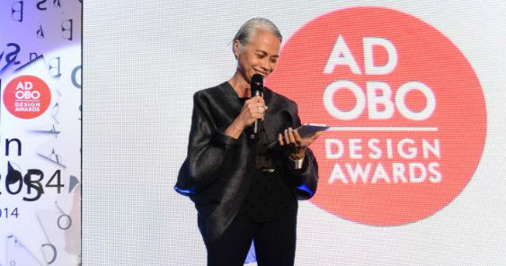
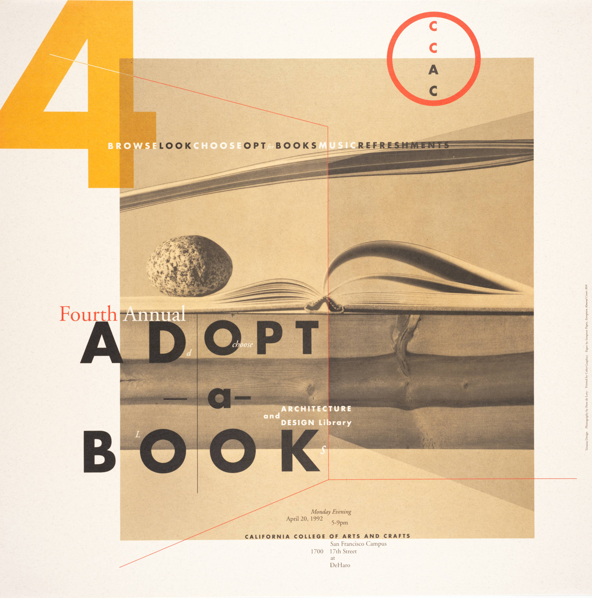
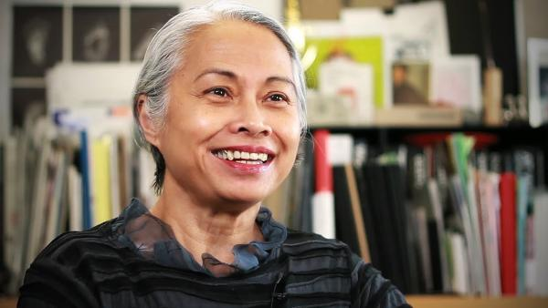

The Biography of Lucille Tenazas
Lucille Tenazas is a highly influential Filipino-American graphic designer, educator, and design innovator whose work has significantly shaped contemporary communication design and design education. Born on December 17, 1953, in Manila, Philippines, she showed early artistic promise and later earned a Bachelor of Fine Arts from the College of the Holy Spirit Manila before moving to the United States in 1979 to further her studies. There, she attended the California College of Arts and Crafts (now CCA) and later received an MFA in 2-D Design from the Cranbrook Academy of Art, where she studied under influential designers and developed a deeply conceptual approach to visual communication that foregrounds language and typography.
Tenazas founded Tenazas Design in San Francisco in 1985, where she built a design practice centered on exploring the intersections of typography, linguistics, and visual meaning. Her work is recognized for its poetic, layered imagery and thoughtful use of language in graphic communication, and her studio has undertaken projects for cultural, educational, and institutional clients. Included among her commissions are work for the San Francisco International Airport, Rizzoli International, Neue Galerie Museum for German and Austrian Art, and numerous nonprofit organizations. Her design approach emphasizes the complexity of visual language and its role in shaping human experience.

Outside of Her Design Career
Beyond her professional practice, Tenazas has had a profound impact on design education. She taught at the California College of the Arts for over two decades and in 2000 became the founding chair of its MFA Design program, a curriculum that prioritizes interdisciplinary inquiry, form-giving, and the development of personal voice in design. Later, she joined Parsons School of Design in New York as the Henry Wolf Professor of Communication Design and served as Associate Dean in the School of Art, Media and Technology, where she continues to influence future generations of designers.
Tenazas has also been deeply involved with the American Institute of Graphic Arts (AIGA), serving as its national president from 1996 to 1998 and expanding the organization’s reach across the U.S. In recognition of her lifelong achievement in design and education, she was awarded the AIGA Medal in 2013, one of the highest honors in the field, and previously received the National Design Award for Communication Design from the Cooper-Hewitt National Design Museum.

Her Works
One of her artworks shown here shows what theme or the style Tenazas goes for in most of her works. As there is a simplistic and symmetrical theme that's going on in this particular work. Again, her designs are known for their typography and photography as she messes around the angles, shapes, or sizes in her creative process. Not to mention the playful colors in type to design it aesthetically pleasing, but ensures to be seen clearly to the public eye.
